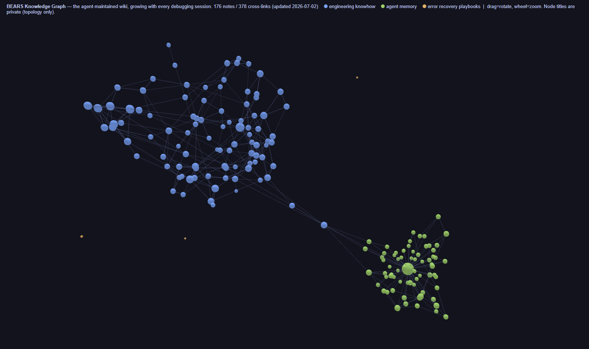

BEARS never debugs the same problem twice. Every failure, every fix, and every lesson is captured in a structured, agent-maintained knowledge base — and fed back into the next run automatically. This page explains how that loop works.
Knowledge is treated as a compounding asset: the wiki is compiled once and becomes context for every following session, instead of being re-derived from scratch each time.
Every solved error becomes a structured recipe: an error-signature pattern, the diagnosed root cause, an ordered list of fixes, a source reference, and a verification date. When a new error appears, the agent matches it against this dictionary before any reasoning — known errors are recovered deterministically at zero cost. Recipes are graded: deterministic auto-fix, LLM-assisted diagnosis, or escalate-to-human.
Every debugging session ends by writing the lesson down: root-cause analysis, exact code locations, verified numbers, and honest limitations. Each document registers in a single index, must cross-link at least one related document, and carries freshness metadata (verified date / status / confidence) so stale knowledge is visible instead of silently trusted.
Preferences, project state, and hard-won lessons persist across sessions as plain-markdown notes with a human-readable catalog. Memories are point-in-time observations: old ones surface with age warnings and are re-verified against current code before being trusted.
Six automated checks keep the knowledge base healthy: unregistered documents, broken links, code references pointing at moved or shrunk files, verification dates older than 90 days, disputed claims, and isolated documents with no relations. Problems are surfaced for a human to judge — the linter never edits content.
A hybrid search engine retrieves the right note across all stores in under a second. Quality is measured, not assumed: a golden regression set of real questions scores every change, and every search miss becomes a new test case — the benchmark grows with use. Heavier machinery (embeddings, vector databases) is deliberately deferred until the evidence demands it.
The whole system is visualized as a living 3D graph: engineering knowhow, agent memories, and recovery recipes, wired together by their cross-references and provenance. Node titles stay private — the public view shows topology only, refreshed as the wiki grows.

1. Markdown is the source of truth. Search indexes and graphs are disposable caches, rebuilt in milliseconds.
2. Evidence before infrastructure. New machinery is adopted only when a measured benchmark says it helps.
3. Every failure is an asset. An error that cost hours once must never cost hours again.
4. Knowledge decays. Documents carry verification dates; better retrieval of stale facts is worse than no retrieval — freshness hygiene comes first.